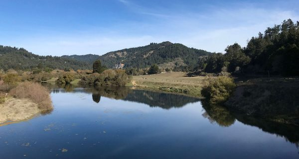
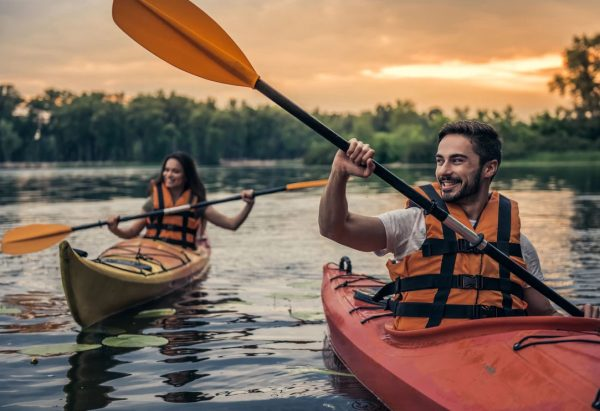
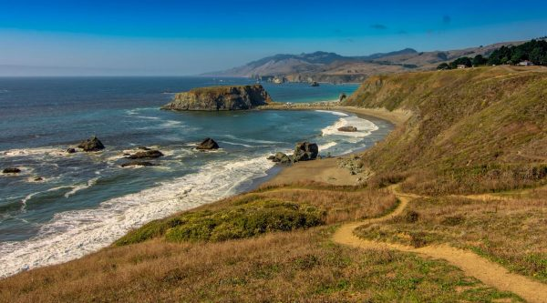
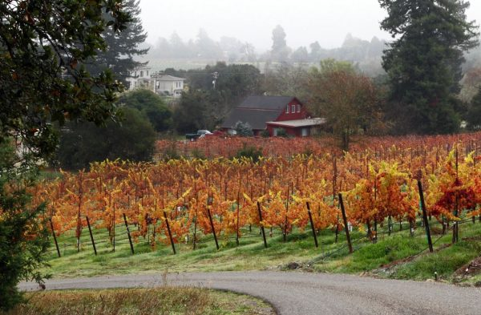
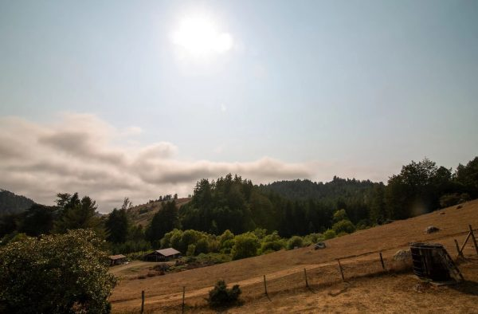
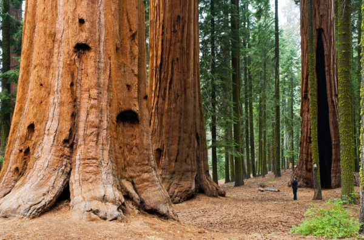

Outdoors
Sonoma County, outside your door
With its mild Mediterranean climate, mountains, valleys, forests, and miles of beautiful Pacific Ocean coastline, Sonoma County offers a generous range of outdoor activities. From kayaking and fly fishing on the lazy Russian River to hot air balloon tours, hiking and mountain biking, Sonoma County offers some of the most beautiful outdoors opportunities in the world.





